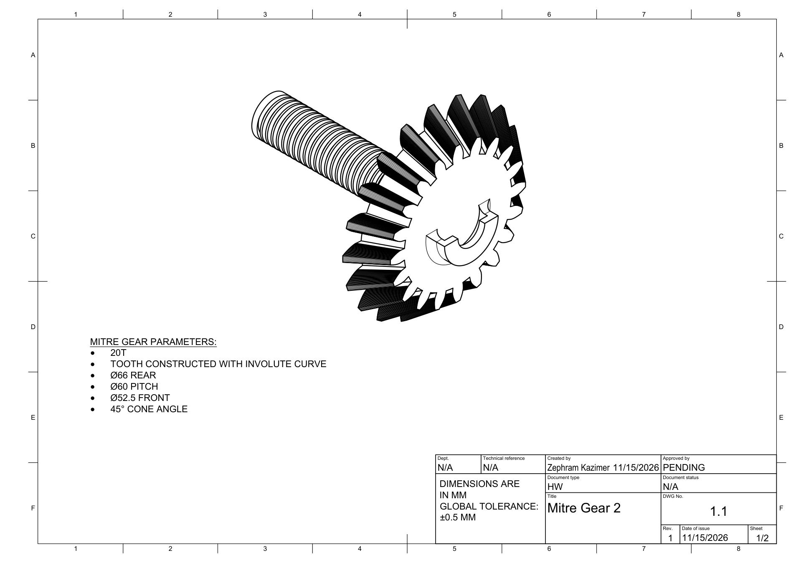
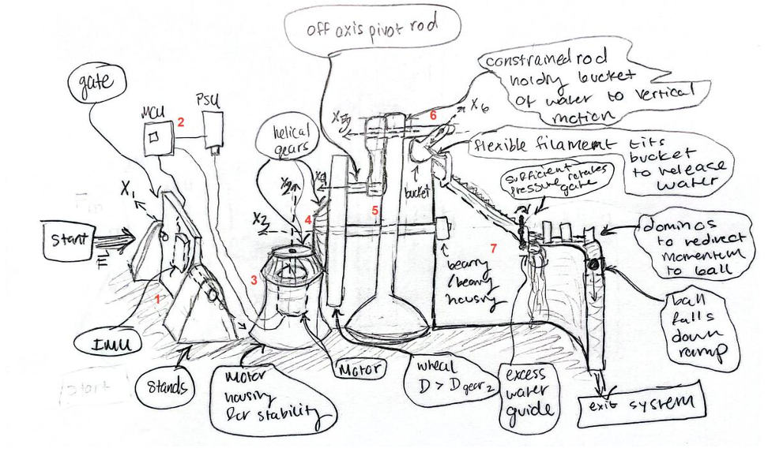
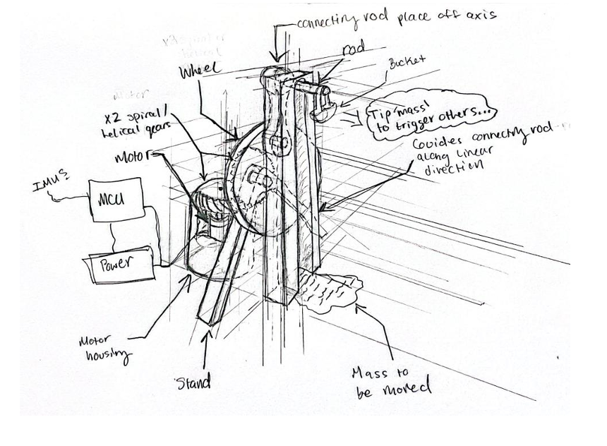

I'm Zephram Kazimer, an engineering student at Oregon State University. This website documents my design process for my Rube Goldberg assembly, sub-system #22.
A. Presentation & justification of Requirements
The objective of this project is to design and manufacture a sub-system that operates within a course-wide Rube Goldberg machine. The sub-system must reliably capture an input force transmit and transform that force through a series of mechanical components, and produce an output force capable of initiating the next peer's sub-system.
To develop and justify requirements for this project a stakeholder analysis was conducted. Along with this engineering specifications were developed.
Stakeholder Analysis & Engineering Specifications Table
| Stakeholder | Need | Engineering Specification | Unit | Driving Direction | Min. | Target | Max. |
|---|---|---|---|---|---|---|---|
| Tier 1 - Primary Stakeholders | |||||||
| Me | Learn more about motorcycle engineering and design by implementing simple machines that can be abstracted to more rigorous motorcycle components. | Number of motorcycle-related components | Count | ↑ | 0 | 2 | 12 |
| Student After My Sub-system | Reliably accept the output energy of their sub-system. | Energy capture | % | ↑ | 75 | 85 | 100 |
| Accept energy in a manner that preserves its quality and minimizes energy losses. | Energy efficiency | % | ↑ | 70 | 85 | 100 | |
| Maintain open and effective communication. | Intentionally left blank. | ||||||
| Student Prior to My Sub-system | Reliably transmit energy to their sub-system. The preliminary energy targets are based on the assumed mass and velocity of a projectile approximately the mass of an apple. | Energy transmitted | J | ↑ | 0 | 14.4 | 62.5 |
| Transmit energy while preserving the quality of the energy received from the previous sub-system. | Not orthogonal, but worth mentioning. | ||||||
| Maintain open and effective communication. | Intentionally left blank. | ||||||
| Course Peers | Operate within a reasonable amount of time in the context of the course-wide system. | Resetting time | s | ↓ | 10 | 30 | 80 |
| Maintain reasonable physical dimensions. | Volumetric system size | m3 | ↓ | 0.0283 | 0.227 | 1.81 | |
| Ensure safe operation of the sub-system. | Component velocities | m/s | ↓ | 0 | 12 | 25 | |
| Dr. Kang | Demonstrate the ability to design a system containing originally designed components intended for additive manufacturing. | Number of 3D printed components | Count | ↑ | 1 | 4 | 12 |
| Tier 2 - Secondary Stakeholders | |||||||
| My Household Members | Maintain an affordable project budget. | Project budget | USD | ↓ | 0 | 40 | 100 |
| Invoke a sense of excitement and/or pride. | Intentionally left blank. | ||||||
| Future Employers | Demonstrate the ability to account for anticipated and unanticipated loads in 3D printable components. | Factor of safety for 3D printed components (subject to available analysis software) | Dimensionless | ↑ | 1 | 3 | 15 |
| Demonstrate the ability to communicate and develop ideas throughout the design process and with collaborators. | Percentage of final portfolio rubric requirements correctly completed | % | ↑ | 0 | 90 | 100 | |
| Tier 3 - Tertiary Stakeholders | |||||||
| Engineering Department at OSU | Invoke a sense of excitement, passion, or exploration. | Intentionally left blank. | |||||
| Characterize the high quality of STEM education provided by Oregon State University. | Number of engineering analyses conducted, excluding factor of safety analysis | Count | ↑ | 1 | 3 | 8 | |
| Develop an innovative or unique sub-system. | Intentionally left blank. | ||||||
| Ensure safety for students, faculty, and members of the public. | Not orthogonal, but worth mentioning. | ||||||
| Rube Goldberg Institute | Maintain audience engagement through relatively short and reliable operation of each individual sub-system. | Cycle time | s | ↓ | 3 | 10 | 30 |
| Department of Energy | Develop a sub-system that invokes a sense of awe. | Not orthogonal, but worth mentioning. | |||||
| Reduce the negative environmental impacts associated with the sub-system. | Number of unusually environmentally harmful components | Count | ↓ | 0 | 1 | 3 | |
| Local Authorities | Ensure safe operation of the sub-system. | Number of components possessing high intrinsic operational safety risks | Count | ↓ | 0 | 1 | 3 |
Table 1. Stakeholder needs and engineering specifications.
The analysis of the stakeholder's needs determined requirements set by the Tier 1 - Primary Stakeholders. Of these requirements great importance was stressed for the reliability, operation, and originality of the design.
For each stakeholder at least one engineering specification was derived. The specifications will be used to guide the design and ensure that the determined requirements are met.

B. Benchmarking
Benchmarking was conducted in order determine products of similar desired mechanical function. This benchmarking formed a starting point for the project's component make up.
Three simple machines were investigated to identify prospective components for the sub-system. These simple machines were levers, pulleys, and gears, wheels, and axles. Gear, wheels, and axles being taken to be of the same simple machine category.
Benchmarked Product Table
| Evaluation Criterion | Levers | Pulleys | Gears, Wheels, and Axles |
|---|---|---|---|
| Background | A lever consists of a rigid beam and a fulcrum. The relative distances between the effort, load, and fulcrum determine the mechanical advantage of the system. Levers are categorized into three classes according to the relative positions of these elements. | A pulley consists of a cable, wheel, and axle. Pulleys are commonly used to transport objects, redirect forces, and provide mechanical advantage. Multiple pulleys can be arranged to achieve a desired mechanical advantage and accommodate spatial requirements. | Wheels and axles provide mechanical advantage through differences in radius. Gears transmit and transform rotational motion between axles, allowing torque and angular velocity to be manipulated through gear ratios. |
| Primary Components |
|
|
|
| Power Requirements (Without Motor) | Dependent upon the torque required to achieve the desired mechanical advantage and displacement of the load. | Dependent upon the force and motion requirements of the load and the configuration of the pulley system. | Dependent upon the torque and angular velocity required to transmit motion and achieve the desired output. |
| Power Requirements (With Motor) |
Prospective Actuators:
Current: 2-15 A |
Prospective Motors:
Current: 1-15 A |
Prospective Motors:
Current: 1-15 A |
| General Materials |
|
Structural Components:
|
|
| Prospective 3D Printing Materials |
Rigid Beam: PLA
Fulcrum: PLA |
Pulley Wheel: PETG, PLA
Axles: Nylon, PETG Bushings: Nylon, PETG Bearings: Nylon, PETG Cable: Nylon or household string |
Gears: Nylon, PETG
Wheels: PLA, PETG Axles: Nylon Bushings: Nylon, PETG Bearings: Nylon, PETG |
| Consumables and Maintenance |
|
|
|
| Existing Products and User Analysis | |||
| Benchmarked Products |
LighTech Magnesium Folding Brake
and Clutch Lever Kit
Aftermarket motorcycle control levers designed to improve ergonomics, aesthetics, and resistance to damage during contact. View Product |
Snatch Block Pulley
A pulley with an opening housing that allows a cable to be inserted or removed without threading it through the entire assembly. View DemonstrationVortex 520 Front Sprocket An aftermarket motorcycle drivetrain component investigated as a related mechanism for transmitting mechanical energy through a flexible tension member. View Product |
Traxxas Metal Axle Gears for TRX-4M
Metal replacement gears intended for use in a small-scale mechanical drivetrain. View Product |
| General User Sentiment | Users value the versatility of levers and their ability to provide mechanical advantage across different applications. Motorcycle lever users also value ergonomic customization, improved control, aesthetics, and folding mechanisms that mitigate damage. | The snatch block demonstration illustrates the versatility and modularity of pulley systems. Motorcycle drivetrain users value customization, gearing selection, maintenance accessibility, and perceived improvements in throttle response. Reported performance improvements were not experimentally verified. | User reviews of replacement metal gears identify stripping of plastic gear teeth as a concern. These observations suggest that material selection, wear resistance, and lubrication are important considerations when designing 3D printed gears. |
| Strengths |
|
|
|
| Shortcomings |
|
|
|
| Implications for Sub-system Design | Levers may provide a mechanically simple means of capturing input energy, redirecting forces, and triggering subsequent mechanical stages. Pivot geometry and structural integrity should be evaluated during detailed design. | Pulleys may provide a means of transmitting mechanical energy between spatially separated stages. Cable routing, alignment, tension, and friction should be considered during concept development. | Gears may provide a means of controlling the torque and angular velocity transmitted between mechanical stages. Material selection, tooth geometry, manufacturing tolerances, and wear resistance should be evaluated. |
Table 2. Comparative benchmarking of mechanical systems, existing products, material requirements, user sentiment, functional advantages, and design limitations.
C. Concluding Design Project Requirements
The above stakeholder analysis, engineering specifications, and benchmarks were used to determine general guidelines to follow for this project's design process.
D. Design for Function
Potential Product Functions
A list of 10 products functions were developed based off of the design requirements determined from the stakeholder needs.
- Transport material.
- Release a projectile by way of rotational motion.
- Transform rotational motion from one axis to another.
- Convert electrical potential into mechanical motion.
- Detect an input force.
- Translate a signal into a catalyst.
- Redirect the flow of material.
- Absorb heat energy.
- Transform rotational motion to linear motion.
- Transfer pneumatic energy.
From this list a functional decomposition diagram was generated. It considers the sub-functions of the potential system and features 7 of the 10 functional flows.
E. Design Concept Generation & Selection Process
Preliminary Product sketch
From the functional decomposition a preliminary product concept was developed. The concept meets stakeholder needs and engineering specifications because the functional decomposition was developed with them in mind.


Morphology Chart
Following the development of a preliminary product sketch, a morphology chart was created that would constraint the proceeding concept generation. Since the functional flow diagram meets stakeholder needs and engineering specifications, so to does the morphology chart.
9 Concept Sketches
Following the morphology chart, 9 concept sketches were generated. Given that the morphology charts meets stakeholder needs and specifications it follows that the 9 concept sketches should as well.
Pugh Decision Chart
The 9 prospective design concepts were weighted against a commonly datum. The datum was the 'Gate to Bucket' concept. The weights range from 1 to 5.
| Design Objective | Weight (1 to 5) | Gate to Bucket (DATUM) | Tres Wheels | Ramp to Ramp | Flailing Rod | The Sewing Machine | Electromagnetic Track | Spring Power | Actuated Pulley Driver | 45-deg Belt | Weighted Points Away from Datum per Design Objective |
|---|---|---|---|---|---|---|---|---|---|---|---|
| Design contains originally designed 3D printed components. | 5 | 0 | 0 | 0 | 0 | 0 | 0 | 0 | 0 | 0 | |
| Design is objectively safe. | 3 | 0 | 0 | 0 | 0 | -1 | 0 | 0 | 0 | -3 | |
| Design is of reasonable size. | 2 | 0 | 0 | -1 | -1 | -1 | 1 | -1 | 0 | -6 | |
| Design offers a fast reset time for debugging. | 4 | 1 | -1 | 0 | 0 | 1 | 0 | -1 | 0 | 0 | |
| Design ideates a reliable method of capturing the input force. | 5 | -1 | 0 | -1 | 0 | 0 | -1 | 0 | 0 | -15 | |
| Design offers objective efficiency in energy transfer. | 4 | 0 | 0 | -1 | 0 | -1 | 1 | -1 | 0 | -8 | |
| Design ideates a reliable method to produce an output force. | 5 | 1 | 1 | 0 | 0 | -1 | 1 | -1 | 1 | 10 | |
| Design is objectively stable or leaves easy to develop room for structural stability. | 5 | 1 | 1 | -1 | 0 | 1 | 1 | 0 | 0 | 15 | |
| Design offers reasonable operational time. | 3 | -1 | -1 | 1 | 0 | 1 | 0 | -1 | 0 | -3 | |
| Design offers the ability to incorporate environmentally conscious components or integrations. | 2 | 0 | 0 | 0 | 0 | -1 | 0 | 0 | 0 | -2 | |
| Design is affordable. | 3 | 0 | 0 | 0 | 0 | -1 | 0 | -1 | -1 | -9 | |
| Design offers an industrial/tactile aesthetic or leaves room to incorporate it. | 4 | -1 | -1 | -1 | 0 | 0 | 0 | -1 | 0 | -16 | |
| Design includes components that are abstracted from the components of a motorcycle. | 5 | -1 | -1 | 0 | 0 | -1 | 0 | -1 | 0 | -20 | |
| Design offers a clear conceptual route to further develop. | 5 | 0 | -1 | 0 | 0 | -1 | 0 | -1 | 0 | -15 | |
| Display STEM education. | 3 | -1 | -1 | 0 | 0 | 0 | 0 | -1 | 0 | -9 | |
| Design conveys a subjective sense of intrigue. | 3 | -1 | -1 | 0 | 0 | 1 | 0 | 1 | 0 | 0 | |
| Total | 61 | -3 | -5 | -4 | -1 | -4 | 3 | -9 | 0 | ||
| Weighted Total | 61 | -9 | -17 | -17 | -2 | -14 | 11 | -35 | 2 |
Pugh Decision Chart: Scoring: +1 = Superior to datum | 0 = Equivalent to datum | -1 = Inferior to datum
Pugh Decision Chart Analysis
For my datum the Gate to Bucket concept was chosen. This decision was based on a favoring initial ideation of my system. Furthermore, I thought it most nearly represented a design that would meet my design objectives. However, the results of the pugh decision chart suggest that the concepts, Spring Power and 45-deg Belt, would better meet the design objectives than the chosen datum. In some respect I agree, but I don’t believe the answer is as simple as Spring Power received +11, so it’s the best suited concept. I believe the end design result will actually be a combination of all three of these designs.
On the pugh decision chart, the elements highlighted orange are objectives for which Spring Power and 45-deg Belt outperformed Gate to Bucket. Both concepts were rated to have superior methods for producing an output force. This method is a force due to a linear pushing force (likely due to a rod). I believe this to be the output function to focus on. I find it challenging to accept that the other output functions, such as solid/liquid being dropped or released from a ledge or the top of an incline, are reliable given the time constraints of the project. Not to mention, in theory, there is less room for error and unpredictability. A linear pushing force offers and method to supply an output force with reliability and thus more closely meets the design objectives.
If the force were by a rob the output method meets the design requirements of 'structural stability' and 'use of components abstracted from motorcycle components.' Which leads to the discussion on why the Spring Power had a better rating in the structural stability design objective. Noticeably, most of the system is housed in a structure and has well supported rotating parts. Taking more consideration in structural support components and/or housing is a key aspect that is under looked in all other design concepts, including the datum Gate to Bucket. Future design integrations should take this into account to meet the structural stability design objective.
In general, design objectives that the concepts of Spring Power and 45-belt rated higher should be taken into account and integrated into the general layout of the Gate to Bucket design, or whichever every design comes about for finalization. To tackle this problem in the most general way (as not to get fixated on one design for future finalization) I have created a column that includes the weighted number of points for which each design objective either fell below or above that of the datum. From this, a general shortcoming in meeting design objectives can be seen across the conceptualization process. Design objects marked in the red are objectives that fall short and will need to be taken into further consideration in later concepts and finalized design.
F. Analysis & Selection
3 Detailed Design Concepts
Guided by the results of the pugh decision chart 3 concepts were selected for more detailed concept generation. These concepts include: 'Gate to Bucket' (Datum), '45-degree Belt/Chain', and 'Spring Power.' Of the 3 concepts 'Gate to Bucket' received the most revision for reasons discussed in the pugh decision chart analysis.
3 Engineering Analyses
For each of the 3 design concepts a detailed analysis was conducted with the goal of understanding the physical feasibility of the design and it's possible requirements.
Spring Power Analysis
Discussion
The results of the analysis show that for the rod to achieve approximately 1.5 m/s and supply approximately 4 N of force the spring will have to have a spring coefficient of around 110 N / m. This is reasonable. Furthermore, altering the length of the spring and its compressed length will have a similar effect on the spring coefficient and the spring force, respectively. If a sufficient spring isn't able to be found, these parameters may be altered instead to achieve the desired output velocity and force.
45-degree Belt/Chain Analysis
Discussion
The results of the analysis show that for a similar shaft characteristic the loss in torque from shaft 1 to shafter 2 is dominated by bearing and disc friction at the support. To reduce these effects, the coefficient of friction should be made as low as possible with lubrication (Vaseline, WD-40, or some other suitable grease for the component material). The analysis shows that with an approximate coefficient of friction of 0.1 for a lubricated surface, the torque transfer can stay around 88%. It will likely be much lower than this because the coefficient of friction ranges from below 0.1 to about 0.3 for different lubricants. Not to mention, the analysis doesn't consider general motor losses, losses from the motor to shaft 1, general inertial losses from the shaft's shape, and belt friction.
Gate to Rod Analysis
Discussion
The results of the analysis show a strong dependency on the geometry of the system as it pertains to the velocity of the output rod. They are also suggesting that with the current dimensioning 1.5 m / s is easily obtained at the rod. 82 rpm is easily obtained by a motor. Not to mention, a low angular speed is desired. Due to the high inertial mass that needs to be rotated, a larger torque is needed. Assuming a sufficient gearing ratio is found, the result of this found ratio will likely suggest a step up that increases the torque and reduces the speed. Finally, the result of the analysis stresses the importance of rod being constrained to only slide horizontally.
Final Concept Decision
For reasons including general intrigue, feasibility, and adherence to stakeholder needs, engineering specifications the concept selected for further design and to inevitable be finalized is 'Spring Power.'
G. CAD Model
H. Engineering Analysis
I. Simulation, Testing, and Data Collection
A simulation of the Von Mises stress distribution under a 10 N load with a fixed end is shown above. It can be seen that if the component were caught (fixed at the end) the the maximum Von Mises stress would still be a fifth of the yield stress for Nylon 12, which is between 40 MPa and 50 MPa.
Element 01
Documentation of external evaluation.
A simulation of the Von Mises stress distribution under a 10 N load with a fixed end is shown above. It can be seen that if the component were caught (fixed at the end) the the maximum Von Mises stress would still be a fifth of the yield stress for Nylon 12, which is between 40 MPa and 50 MPa.

Centered text next to the image
A paragraph.
Element 02
Reflection on the design project.
A paragraph.
Element 03
Presentation of the designers recommendations.